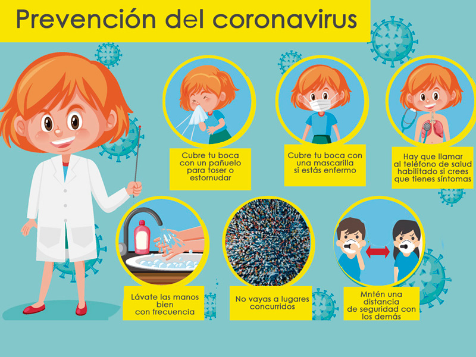

¿Cómo se trasmite?
El coronavirus humanos se transmiten de una persona infectada a otras:
A través de las gotículas que expulsa un enfermo al toser y estornudar
Al tocar o estrechar la mano de una persona enferma
Un objeto o superficie contaminada con el virus y luego llevarse las manos sucias a boca, nariz u ojos.
